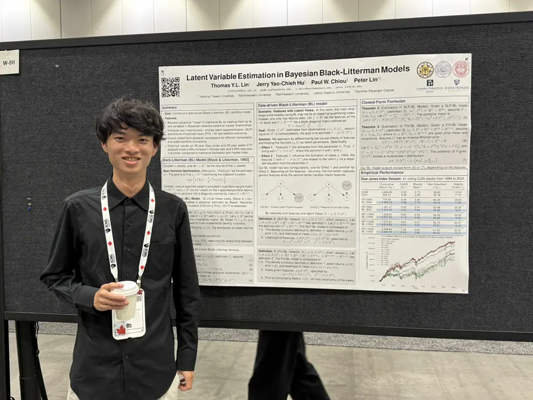
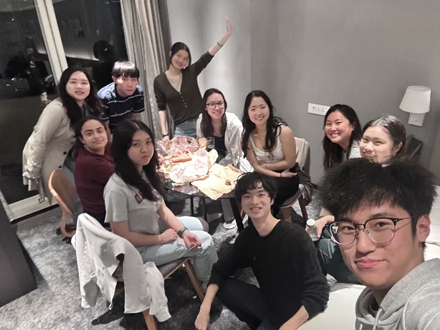
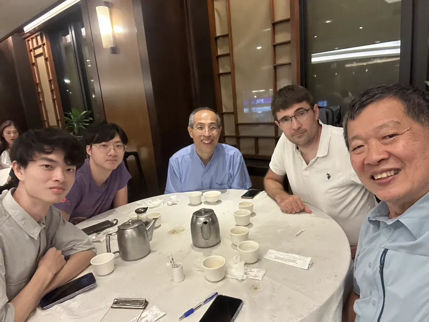
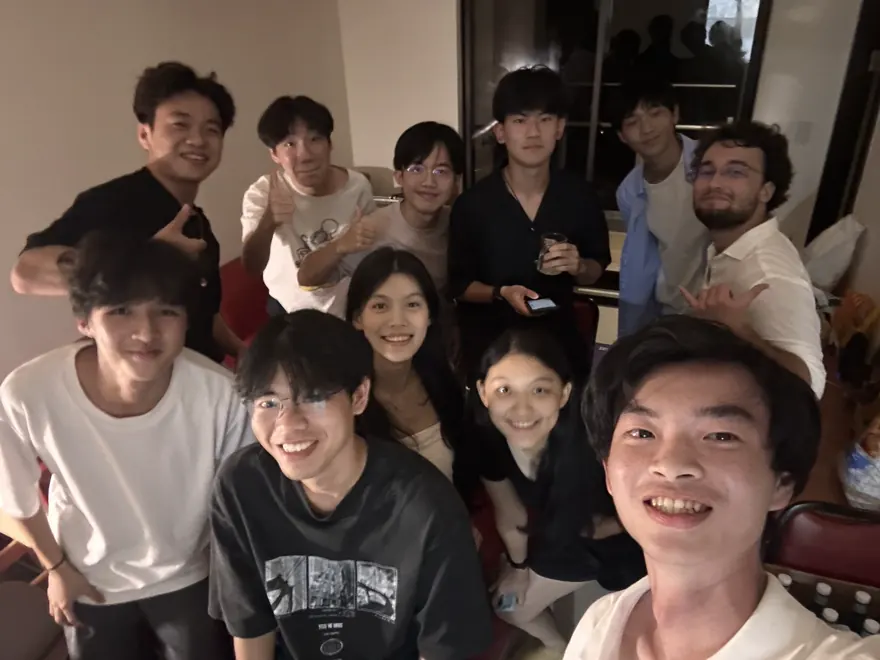
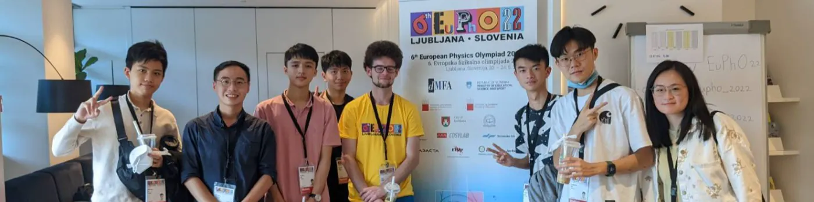

About Me
I grew up in Taiwan and bootstrapped my way to the US at 20. My path is a jump diffusion, driven by curiosity, a pursuit of impact, and a fear of mediocrity.
My inspiration traces back to a childhood fascination with chaos theory, where nontrivial phenomena emerge from simple math. The real aspiration is not merely to explain nature, but to engineer artifacts beyond it. That pursuit carried me through competitive physics programs and into founding a national team for the European Physics Olympiad. There, I won medals and earned early, test-free admission to National Taiwan University.
The year I entered college, ChatGPT emerged and prompted me to shift from physics to AI/ML research. I was fortunate to work with Northwestern University (MAGICS Lab), Gamma Paradigm Capital, and Caltech (AI4Science Lab). Through publications, I attended top conferences and met some of the most brilliant minds on Earth. It became clear the world was bigger than where I started. So I left my home country, applied for transfer, and made it to the University of Washington.
My long-term bet is the experience machine (Nozick, 1974), broadened to any form of life: the right to dream an ego-centric, reversible, and eternal second life. And, in both the world model and H. sapiens senses, dreaming is not escapism but intelligence itself. For humans, it may be the most Renaissance act after eras of slavery and labor, and the most economically efficient way to turn desire into realized utility.
Projects & Publications
Experience
Research Intern
San Jose, CA · Jun 2026 - Present
Building a world model of photonic IC physics.
Pitched the chairman for funding and data.
Summer Undergraduate Research Fellowships (SURF)
Pasadena, CA · Mar 2025 - Present
- Developed the Decoupled Diffusion Inverse Solver (DDIS), a physics-aware generative framework for PDE inverse problems that decouples coefficient-prior learning from physics enforcement via neural operators.
- Identified and proved a "guidance attenuation" failure mode in joint-embedding diffusion models under limited paired data, motivating the decoupled design.
- Reached state-of-the-art accuracy with only 1% paired data, cutting reconstruction error by 11% (L2) and 54% (spectral) over prior best solvers on inverse Helmholtz, Poisson, and Navier-Stokes problems.
Intern at AI4Science Lab. Advised by Prof. Anima Anandkumar and PhD student Jiachen Yao.
Machine Learning Intern
Remote · Apr 2023 - Apr 2025
- Analyzed the fine-grained complexity of modern Hopfield models and developed near-linear-time approximation algorithms with bounded error (ICML 2024).
- Developed a data-driven Black-Litterman model that learns investor views as latent variables from market data (ICML 2025).
Intern at MAGICS Lab, Dept. of CS. Advised by Prof. Han Liu and PhD candidate Jerry Hu.
Quantitative Analyst Intern
Taipei, Taiwan · Jun 2023 - Jul 2024
- Implemented and backtested portfolio strategies (Distributionally Robust Optimization and Black-Litterman allocation), achieving higher Sharpe ratios with lower drawdowns and turnover than SPY and EQW benchmarks.
Education
Ventures & Community
YC AI Startup School
An exclusive social event with speeches from well-known AI figures and networking with top CS students.

ICML '24 & '25
Presenting papers at top-tier ML conferences in Vienna and Vancouver. Connecting with some brilliant minds on Earth.

Harvard x NTU (HUAP)
A club at National Taiwan University for short-term exchange with Harvard students.
As a PR Member, I fundraised a record-high $4,500 USD cash sponsorship and hosted Harvard students for the Spring Conference.

NTU ABC Lab & Prof. Liao
Biggest blockchain lab in Taiwan with the legendary Prof. Shih-wei Liao.
I served for two years as a TA for multiple 150-student courses and as a social assistant hosting his visitors.

NTU Phi-Epsilon-Delta
An unofficial fraternity founded in my house next to NTU campus.
We hosted networking events for NTU, exchange, and overseas Taiwanese students.

2022 European Physics Olympiad
Team Taiwan at the 2022 European Physics Olympiad at Slovenia.
I founded the team, fundraised the trip, won a bronze medal, and secured my college admission.